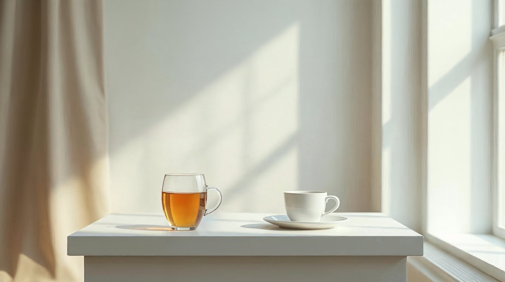
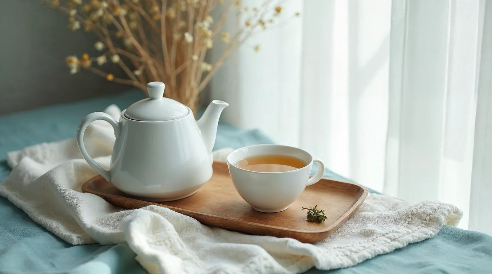
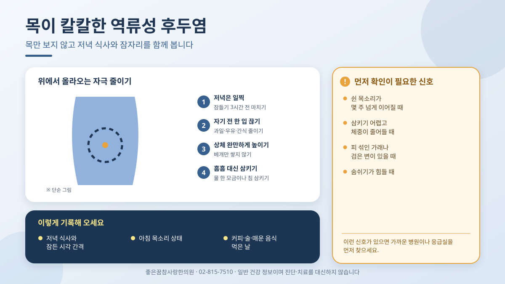

이종호 한의사 감수좋은꿈참사랑한의원 대표원장 (한의사 면허번호 19769)발행 2026-11-26 · 수정 2026-11-26
이 글의 차례
아침에 일어나 첫마디를 하려는데 목소리가 갈라집니다. 물을 한 모금 마시고 '흠, 흠' 목을 가다듬어 봐도 목 안쪽에 얇은 막이 붙어 있는 것 같습니다. 감기 기운도 없고 열도 없는데, 이런 아침이 몇 주째 이어지면 마음이 쓰이기 시작합니다.
진료실에서 이런 이야기를 들으면 저는 저녁을 몇 시에 드시는지부터 여쭙니다. 목 이야기를 하러 왔는데 왜 밥 이야기를 하느냐고 의아해하시는 분이 많습니다. 그런데 목이 칼칼한 이유가 목이 아니라 위에서 올라오는 경우가 생각보다 흔합니다.
위산이나 위 속 내용물이 식도를 지나 목 위쪽, 후두와 인두까지 올라와 자극하는 것을 흔히 역류성 후두염, 또는 인후두 역류라고 부릅니다. 속쓰림이 뚜렷한 역류성 식도염과 달리, 가슴은 별로 쓰리지 않은데 목 증상만 앞에 나서는 경우가 많아 알아차리기 어렵습니다.
그래서 이 글에서는 목 증상을 위와 함께 보는 이유, 감기나 후비루와 어떻게 다른지, 집에서 바꿔 볼 수 있는 습관과 한의원에서 함께 살피는 부분을 차례로 정리해 보았습니다.
역류성 후두염은 어떤 상태인가요?
식도와 위 사이에는 문처럼 닫혀 있는 근육이 있고, 식도 위쪽 끝에도 목으로 넘어가는 길을 막아 주는 근육이 있습니다. 이 두 문이 느슨해지거나 배 안의 압력이 높아지면 위 속의 산과 소화효소가 위로 거슬러 올라올 수 있습니다.
식도 벽은 산에 어느 정도 버티지만, 목소리를 내는 후두와 그 주변 점막은 훨씬 얇고 예민합니다. 아주 적은 양이 잠깐 닿아도 붓고 따가워질 수 있습니다. 그래서 가슴은 멀쩡한데 목만 불편한 일이 생깁니다.
이 역류는 꼭 누워 있을 때만 생기는 것이 아닙니다. 앉아 있거나 서서 일하는 낮 시간에도 가스처럼 조금씩 올라와 목을 건드리는 분이 많습니다. 트림이 잦거나 배에 가스가 자주 차는 분이 목 증상을 함께 호소하시는 것도 이와 연결되어 있습니다.
목에서 느껴지는 신호들
역류성 후두염에서 흔히 말씀하시는 불편은 비슷한 모양을 띱니다. 하나만 있기보다 몇 가지가 겹쳐서 나타나는 경우가 많습니다.
- 아침에 목소리가 잠기거나 갈라짐
- 자꾸 '흠흠' 목을 가다듬는 습관
- 목에 뭔가 걸려 있는 듯한 이물감
- 끈적한 가래가 조금씩 붙어 있는 느낌
- 식사 뒤나 누운 뒤에 나오는 마른기침
- 입안이 시거나 쓴맛이 도는 느낌
이 가운데 목을 자꾸 가다듬는 습관은 그 자체로 성대를 다시 자극해 목을 더 예민하게 만듭니다. 불편해서 가다듬고, 가다듬어서 다시 불편해지는 고리가 생기는 셈입니다. 이 고리를 끊는 것도 관리의 중요한 한 부분입니다.
왜 속은 안 쓰린데 목만 불편할까요
가장 흔한 이유는 역류의 양과 모양 때문입니다. 많은 양이 오래 머무르면 식도가 쓰려 속쓰림으로 느껴지지만, 적은 양이 가스처럼 빠르게 올라와 목까지 닿으면 식도는 별 느낌이 없고 예민한 목만 반응합니다.
저녁 식사 시각도 크게 작용합니다. 늦게 많이 먹고 바로 누우면 위가 아직 꽉 찬 상태에서 몸이 수평이 되어 내용물이 거슬러 오르기 쉽습니다. 야근이 잦은 분, 밤에 배달 음식을 자주 드시는 분에게 이 증상이 많은 이유입니다.
커피, 술, 탄산음료, 초콜릿, 박하, 기름진 음식은 위쪽 문을 느슨하게 하거나 위산을 늘릴 수 있습니다. 배를 조이는 옷, 앞으로 숙인 자세, 늘어난 뱃살, 변비처럼 배의 압력을 높이는 것들도 역류를 돕습니다.
긴장과 스트레스도 빼놓을 수 없습니다. 마음이 쫓기면 숨이 얕아지고 침을 자주 삼키며 공기를 함께 삼키게 됩니다. 위가 공기로 부풀면 트림과 함께 산이 올라오기 쉬워집니다. 한의학에서는 이런 흐름을 기운이 아래로 내려가지 못하고 위로 치받는 모습으로 보기도 합니다.
감기, 후비루, 만성 인후염과는 어떻게 다른가요
감기로 인한 인후염은 대개 열, 몸살, 콧물과 함께 시작해 1~2주 안에 가라앉습니다. 역류성 후두염은 열이 없고, 몇 주에서 몇 달 동안 좋아졌다 나빠졌다를 되풀이하며, 식사나 잠자리 습관과 함께 오르내리는 경우가 많습니다.
후비루는 콧물이 목 뒤로 넘어가 헛기침을 만드는 상태입니다. 코막힘, 콧물, 재채기가 함께 있고 아침에 누런 가래를 뱉는 경우가 많습니다. 역류는 코 증상이 별로 없고 식사 뒤나 누운 뒤에 목이 더 불편하다는 점이 다릅니다. 두 가지가 함께 있는 분도 계십니다.
목소리를 많이 쓰는 일에서 오는 성대 피로는 말을 많이 한 날 저녁에 더 쉬고, 쉬는 날에는 가벼워지는 흐름을 보입니다. 역류는 오히려 아침에 더 잠겨 있다가 낮에 풀리는 경우가 많습니다. 어느 쪽인지 헷갈리면 며칠만 기록해 보셔도 실마리가 보입니다.
병원에서는 어떤 검사를 하나요
이비인후과에서는 가는 내시경으로 후두와 성대 주변이 붓거나 붉어졌는지, 다른 혹이나 염증은 없는지를 봅니다. 목 증상이 오래간다면 한 번은 이 검사로 목 자체에 다른 문제가 없는지 확인해 두시는 것이 마음을 놓는 데 도움이 됩니다.
속쓰림이나 명치 불편이 함께 있다면 내과에서 위내시경을 권하기도 합니다. 위산을 줄이는 약을 일정 기간 써 보며 목 증상이 어떻게 달라지는지 지켜보는 방법도 흔히 씁니다. 이런 검사와 약은 각 과 선생님의 판단에 따라 정해집니다.
한의원에서는 그 결과를 바탕으로, 검사에서 큰 이상이 없는데 불편이 남는 경우나 약을 쓰는 동안 생활과 몸의 흐름을 함께 다듬고 싶은 경우를 주로 함께 살핍니다.
생활 속에서 놓치기 쉬운 습관
진료실에서 가장 자주 발견하는 것은 '자기 직전의 한 입'입니다. 저녁은 일찍 먹었는데 잠들기 전 과일, 우유, 과자를 조금 드시는 습관이 있는 분이 많습니다. 양은 적어도 위를 다시 움직이게 해서 밤사이 역류를 부를 수 있습니다.
물을 많이 마시면 산이 씻겨 내려간다고 생각해 누워서도 물을 자주 드시는 분이 계십니다. 목이 마를 때 조금씩 드시는 것은 좋지만, 자기 직전에 많이 마시면 위가 차서 오히려 역류에 도움이 되지 않습니다.
목에 좋다는 따뜻한 차도 종류를 보셔야 합니다. 박하가 들어간 차는 시원한 느낌을 주지만 위쪽 문을 느슨하게 할 수 있습니다. 진한 녹차나 홍차도 카페인이 있어 저녁에는 줄이시는 편이 좋습니다.
계절과 시기에 따라 달라지는 목
겨울에는 난방으로 공기가 마르면서 목 점막이 더 쉽게 따가워집니다. 같은 양의 역류라도 마른 목에서는 더 크게 느껴질 수 있어, 겨울에 증상이 심해졌다고 말씀하시는 분이 많습니다. 방 안 습도를 40~60% 정도로 맞춰 두면 도움이 됩니다.
연말과 명절처럼 모임이 이어지는 시기에는 늦은 식사, 술, 기름진 음식이 한꺼번에 겹칩니다. 이 시기에 목 증상이 갑자기 심해졌다가 일상으로 돌아오면 가라앉는 흐름이 보인다면, 식사 습관이 목과 깊이 연결되어 있다는 단서가 됩니다.
시험이나 마감처럼 마음이 쫓기는 시기에도 목 증상이 올라오는 분이 계십니다. 끼니가 불규칙해지고 커피가 늘며 잠이 줄어드는 시기여서, 목만 보지 말고 그 몇 주의 생활 전체를 함께 돌아보시길 권합니다.

목소리를 많이 쓰는 분이라면
교사, 강사, 상담 일을 하시는 분은 역류와 목 사용이 겹쳐 목이 쉽게 지칩니다. 말을 많이 하는 날에는 중간중간 물을 조금씩 드시고, 큰 소리 대신 마이크를 쓰는 것만으로도 목의 부담을 덜 수 있습니다.
점심을 급하게 먹고 바로 강의나 통화를 이어 가면 위가 아직 바쁜 상태에서 배에 힘을 주며 말하게 됩니다. 가능하다면 식사 뒤 10~15분이라도 말을 쉬는 틈을 두시는 것이 목과 위 모두에게 좋습니다.
먼저 이렇게 여쭙니다
처음 오시면 대략 이런 순서로 여쭙니다. 미리 떠올려 오시면 이야기가 훨씬 수월합니다.
- 목 불편은 언제부터, 하루 중 언제 가장 심한가요?
- 저녁 식사는 보통 몇 시에 드시고, 몇 시에 주무시나요?
- 속쓰림, 신물, 트림, 더부룩함이 함께 있나요?
- 커피, 술, 탄산음료, 매운 음식은 얼마나 드시나요?
- 코막힘이나 콧물, 누런 가래가 같이 있나요?
- 이비인후과나 내과에서 받은 검사와 드시는 약이 있나요?
목소리를 많이 쓰는 일을 하시는지, 담배를 피우시는지도 여쭙니다. 성대를 쓰는 양과 담배 연기는 역류와 함께 목을 예민하게 만드는 요인이어서, 무엇을 먼저 바꿀지 정할 때 참고가 됩니다.
일상에서 먼저 해 볼 수 있는 것
한꺼번에 모든 습관을 바꾸려 하기보다, 목 증상과 가장 가까워 보이는 것 하나를 골라 2주 정도 지켜보시길 권합니다.
- 저녁은 잠들기 3시간 전에 마치기
- 저녁 양은 평소의 7~8할 정도로 줄이기
- 잠자리 머리 쪽을 베개 대신 침대 다리 높이로 조금 올리기
- 왼쪽으로 돌아누워 자 보기
- 커피는 오전 한 잔으로, 탄산음료와 저녁 술은 줄이기
- 허리를 조이는 벨트와 옷을 느슨하게
베개만 여러 개 높이면 목이 꺾이고 배가 접혀 오히려 압력이 올라갈 수 있습니다. 침대 머리 쪽 다리 밑에 받침을 두거나, 상체 전체를 완만하게 받쳐 주는 쿠션을 쓰는 편이 좋습니다.
목을 가다듬고 싶을 때는 '흠흠' 대신 침을 한 번 삼키거나 물을 한 모금 마셔 보세요. 처음에는 어색하지만 며칠만 해 봐도 가다듬는 횟수가 줄고 목의 따가움도 덜해지는 것을 느끼시는 분이 많습니다.
식사는 천천히, 한 입을 여러 번 씹으며 드시는 것이 좋습니다. 빨리 먹으면 공기를 함께 삼켜 위가 부풀고, 트림과 함께 산이 올라오기 쉽습니다. 식사 뒤 바로 눕거나 엎드려 휴대폰을 보는 자세도 피해 주세요.
한의원에서 함께 살필 수 있는 경우
- 이비인후과나 내과 진료를 받았는데 목 이물감과 헛기침이 남는 경우
- 긴장하면 목이 조이고 트림과 더부룩함이 함께 오는 경우
- 저녁만 되면 속이 더부룩하고 밤에 목이 더 칼칼한 경우
- 목소리를 많이 쓰는 일을 하면서 목과 어깨가 함께 굳는 경우
좋은꿈참사랑한의원에서는 먼저 아래 '먼저 확인이 필요한' 신호가 없는지부터 봅니다. 그다음 맥과 혀, 명치와 배의 상태를 살피고, 식사 리듬과 잠, 긴장의 정도를 여쭙니다. 목 증상만 따로 보기보다 소화와 마음의 흐름을 함께 놓고 봅니다.
진찰한 내용을 바탕으로 생활에서 바꿔 볼 것 하나와 함께 침, 목과 어깨의 긴장을 푸는 관리, 한약 상담 가운데 지금 상태에 맞는 것을 정합니다. 한약을 상의할 때는 드시는 위장약과 다른 약을 모두 확인하고 신중히 정합니다.
병원에서 위산을 줄이는 약을 처방받아 드시고 있다면 그 약은 처방대로 이어 가시고, 줄이거나 멈추는 일은 처방한 선생님과 상의하세요. 한의원 진료는 그 치료와 나란히 생활과 몸의 흐름을 함께 살피는 자리라고 생각해 주시면 됩니다.
이렇게 기록해 오시면 상담이 쉬워집니다
역류성 후두염은 하루 중 흐름이 중요한 단서가 됩니다. 2주 정도만 간단히 적어 보세요.
- 저녁 식사 시각과 잠든 시각의 간격
- 아침 목소리 상태(맑음, 조금 잠김, 많이 잠김)
- 헛기침이 심했던 때와 그 직전에 한 일
- 커피, 술, 탄산음료, 매운 음식을 드신 날
- 트림, 신물, 더부룩함이 있었던 때
기록을 나란히 놓고 보면 '늦게 먹은 다음 날 아침 목이 더 잠긴다'처럼 연결이 보이기 시작합니다. 그 연결이 바로 무엇부터 바꿀지 정하는 출발점이 됩니다.

목은 위와 함께 돌봅니다
목이 칼칼할 때 목캔디나 목 스프레이만 찾게 되기 쉽지만, 원인이 아래에서 올라오는 것이라면 목만 달래서는 같은 아침이 반복되기 쉽습니다. 저녁 시각 하나, 자기 전 한 입 하나를 바꾸는 것이 생각보다 큰 차이를 만들 수 있습니다.
이번 주에는 저녁을 잠들기 3시간 전에 마치는 것 하나만 골라 보세요. 다음에 오시면 아침 목소리 기록부터 함께 펼쳐 보겠습니다. 작은 변화가 쌓이는 모습을 함께 확인하는 것이 다음 걸음을 정하는 가장 좋은 재료가 됩니다.
이런 증상은 먼저 확인이 필요합니다
- 쉰 목소리가 몇 주 넘게 이어지거나 음식을 삼키기 어렵고 체중이 줄어드는 경우
- 피 섞인 가래나 토혈, 검은 변이 있거나 숨쉬기가 힘든 경우
이런 신호가 있으면 한의원보다 가까운 병원이나 응급실을 먼저 찾으세요.
함께 읽으면 좋은 글
- 속쓰림과 신물이 오래 갈 때 어떤 점을 살펴보고, 언제 검사를 받아야 하나요?
- 목이 늘 칼칼하고 뭔가 걸린 듯한 만성 인후염·매핵기는 어떻게 살피나요?
- 콧물이 목 뒤로 넘어가 자꾸 헛기침이 나는 후비루는 왜 생기고 어떻게 살피나요?
- 목이 쉬고 목소리가 잘 안 나올 때, 강사·교사는 무엇부터 살피나요?
- 퇴근이 늦어 밤 10시 넘어 배달 음식으로 저녁을 먹으면 속이 쓰리고 잠이 얕을 때는 어떻게 살피나요?

여쭙는 것
- 목 불편은 언제부터, 하루 중 언제 가장 심한가요?
- 저녁 식사는 보통 몇 시에 드시고, 몇 시에 주무시나요?
- 속쓰림, 신물, 트림, 더부룩함이 함께 있나요?
생활에서 해 볼 것
- 저녁은 잠들기 3시간 전에 마치기
- 저녁 양은 평소의 7~8할 정도로 줄이기
- 잠자리 머리 쪽을 베개 대신 침대 다리 높이로 조금 올리기
한의원에서 함께 살필 것
- 이비인후과나 내과 진료를 받았는데 목 이물감과 헛기침이 남는 경우
- 긴장하면 목이 조이고 트림과 더부룩함이 함께 오는 경우
- 저녁만 되면 속이 더부룩하고 밤에 목이 더 칼칼한 경우
먼저 확인이 필요한 신호
- 쉰 목소리가 몇 주 넘게 이어지거나 음식을 삼키기 어렵고 체중이 줄어드는 경우
- 피 섞인 가래나 토혈, 검은 변이 있거나 숨쉬기가 힘든 경우
한눈에 보는 표
| 구분 | 핵심 |
|---|---|
| 여쭙는 것 | 목 불편은 언제부터, 하루 중 언제 가장 심한가요? 저녁 식사는 보통 몇 시에 드시고, 몇 시에 주무시나요? |
| 생활에서 해 볼 것 | 저녁은 잠들기 3시간 전에 마치기 저녁 양은 평소의 7~8할 정도로 줄이기 |
| 한의원에서 함께 살필 것 | 이비인후과나 내과 진료를 받았는데 목 이물감과 헛기침이 남는 경우 긴장하면 목이 조이고 트림과 더부룩함이 함께 오는 경우 |
| 먼저 확인이 필요한 신호 | 쉰 목소리가 몇 주 넘게 이어지거나 음식을 삼키기 어렵고 체중이 줄어드는 경우 피 섞인 가래나 토혈, 검은 변이 있거나 숨쉬기가 힘든 경우 |
자주 묻는 질문
속쓰림이 없어도 역류일 수 있나요?
네, 목 증상만 앞에 나서는 경우가 많습니다. 적은 양이 가스처럼 목까지 올라오면 식도는 별 느낌이 없고 예민한 목만 반응할 수 있습니다.
목캔디를 계속 먹어도 되나요?
잠깐 시원할 수 있지만 박하가 든 것은 위쪽 문을 느슨하게 할 수 있습니다. 목이 마를 때는 미지근한 물을 조금씩 드시는 편이 좋습니다.
위산 억제제를 먹는 중에 한약을 함께 먹어도 되나요?
드시는 약을 모두 확인하고 신중하게 정합니다. 처방받은 약은 처방대로 이어 가시고, 약 봉투나 처방전 사진을 가져와 주세요.
베개를 높이 베면 도움이 되나요?
베개만 높이면 목이 꺾이고 배가 접혀 오히려 압력이 오를 수 있습니다. 침대 머리 쪽을 조금 올리거나 상체 전체를 완만하게 받치는 편이 좋습니다.
얼마나 지켜보다가 검사를 받아야 하나요?
쉰 목소리가 몇 주 넘게 이어지거나 삼키기 어려움, 체중 감소가 있으면 이비인후과나 내과 검사를 먼저 받으시길 권합니다.
좋은꿈참사랑한의원은 재진 때 지난번 이야기부터 이어서 여쭙니다. 진료시간과 예약은 오시는 길에서 확인하세요.
어디서 상담받을 수 있나요?
좋은꿈참사랑한의원은 서울 동작구 만양로2길 2 신성빌딩 3층·5층(서울 동작구 상도동, 7호선 상도역 3번 출구 근처)에 있습니다. 한의사 3명(이종호 대표원장, 조영기 수석진료원장, 정원영 진료원장)이 진료합니다. 진료시간은 평일 09:30~20:00(점심 13:00~14:00), 토·일·공휴일 09:30~15:00이며, 방문 전 전화로 확인을 권합니다. 예약은 네이버 예약, 카카오톡 상담, 전화 02-815-7510로 받습니다.
이 글은 일반적인 건강 정보이며 개인의 진단이나 치료를 대신하지 않습니다. 증상이 있거나 복용 중인 약이 있다면 진료를 통해 확인하세요. 치료 효과는 개인마다 다를 수 있습니다.
작성 기준: 일반적으로 알려져 있는 건강 정보를 참고해 정리했습니다(대표원장 감수). 증상 기록은 1~2주 동안 하루 1회, 비슷한 시간에 적어 오시면 지난 상태와 비교하기 쉽습니다.